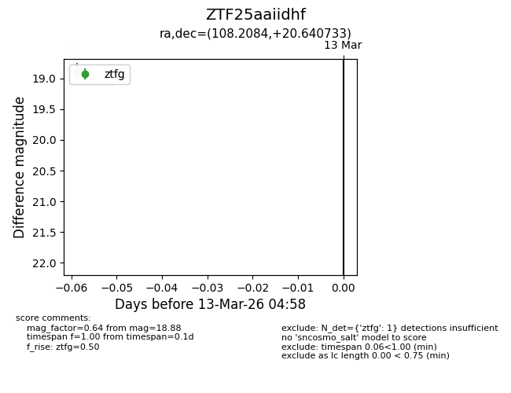
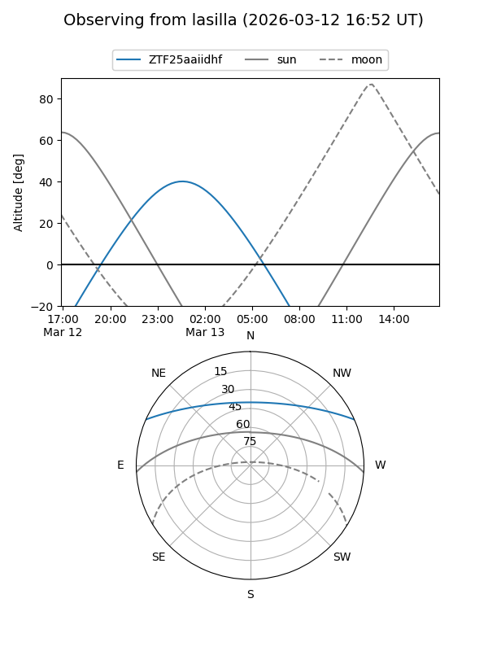
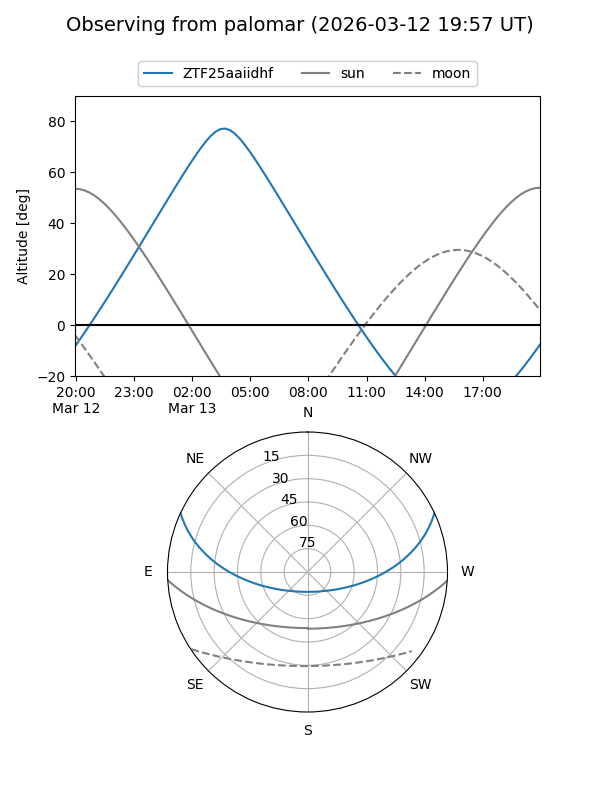

ZTF25aaiidhf
Target ZTF25aaiidhf at 2026-03-13 04:59
Aliases and brokers:
FINK: link
Lasair: link
ALeRCE: link
alt names
ZTF25aaiidhf (ztf,fink_ztf)
Coordinates:
equatorial (ra, dec) = 108.2084,+20.64073
equatorial (HMS+DMS) = 07:12:50.01,+20:38:26.64
galactic (l, b) = (196.5475,+13.79076)
Flags:
Photometry:
last ztfg=18.88
1 ztfg detections
Lightcurve

Visibility


Additional plots